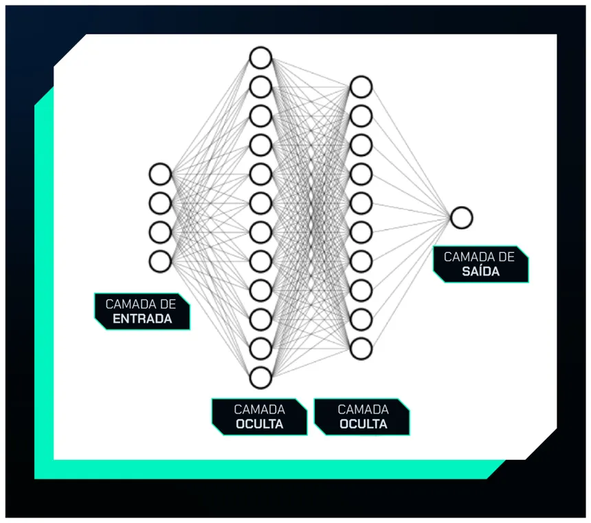

O que é Inteligência Artificial?
A Inteligência Artificial surgiu como disciplina formal em 1956, durante a Conferência de Dartmouth, onde cientistas como John McCarthy e Marvin Minsky definiram o objetivo de criar máquinas que pensassem como humanos. Desde então, a área passou por períodos de grande entusiasmo e também por momentos de estagnação. Hoje, com o poder computacional e a abundância de dados, a IA vive sua era mais promissora.
Existem diferentes abordagens para a IA. A IA Simbólica utiliza regras lógicas explícitas. O Aprendizado de Máquina permite que sistemas aprendam padrões diretamente a partir de dados. O Aprendizado Profundo usa redes neurais com muitas camadas para resolver problemas complexos.
Principais Ramos da IA
A Inteligência Artificial se divide em diversas subáreas especializadas:
- Aprendizado de Máquina (ML): algoritmos que aprendem com dados.
- Processamento de Linguagem Natural (PLN): compreensão e geração de texto e fala.
- Visão Computacional: interpretação de imagens e vídeos por computadores.
- Robótica Inteligente: robôs que percebem e agem no mundo físico.
- Sistemas Especialistas: programas que simulam o conhecimento de um especialista humano.
- IA Generativa: modelos que criam conteúdo novo como textos, imagens e vídeos.
Visualizando a IA
As redes neurais artificiais foram inspiradas na estrutura do cérebro humano. Cada neurônio artificial recebe entradas, aplica um peso e passa o resultado adiante, formando camadas que aprendem representações cada vez mais abstratas dos dados.

Aprendizado de Máquina
O Aprendizado de Máquina é a espinha dorsal da IA moderna. Em vez de programar regras manualmente, fornecemos ao algoritmo um conjunto de dados de treinamento e ele descobre os padrões por conta própria.
Comparativo dos Tipos de Aprendizado
A tabela a seguir resume os principais paradigmas de aprendizado de máquina:
| Paradigma | Descrição | Algoritmos Comuns | Exemplo de Uso |
|---|---|---|---|
| Supervisionado | Aprende com dados rotulados. | Regressão, SVM, Árvores de Decisão | Detectar spam em e-mails |
| Não Supervisionado | Encontra padrões em dados sem rótulos. | K-Means, PCA, Autoencoders | Segmentação de clientes |
| Por Reforço | Aprende por tentativa e erro. | Q-Learning, PPO, A3C | Jogar xadrez, robótica |
| Semi-supervisionado | Combina dados rotulados e não rotulados. | Label Propagation, Self-training | Classificação médica |
| Fonte: adaptado de Géron, A. Hands-On Machine Learning, O'Reilly, 2022. | |||
Redes Neurais e Aprendizado Profundo
As Redes Neurais Artificiais são modelos computacionais formados por camadas de neurônios interconectados. O Aprendizado Profundo utiliza redes com dezenas ou centenas de camadas para aprender representações hierárquicas dos dados, revolucionando tarefas como reconhecimento de voz e tradução automática.
Arquiteturas notáveis incluem as Redes Convolucionais (CNN), especializadas em imagens; as Redes Recorrentes (RNN/LSTM), para dados sequenciais; e os Transformers, base dos grandes modelos de linguagem como GPT e BERT.
Vídeo: Como funcionam as Redes Neurais?
Assista ao vídeo abaixo para entender de forma visual como uma rede neural aprende:
Aplicações da IA no Mundo Real
A Inteligência Artificial está presente em praticamente todos os setores. De assistentes virtuais a sistemas de diagnóstico médico, a IA transforma a forma como vivemos e trabalhamos. Aplicações incluem: carros autônomos, detecção de fraudes, recomendação de conteúdo e geração de código-fonte.
Ética em Inteligência Artificial
Com o avanço da IA surgem importantes questões éticas. Algoritmos podem perpetuar vieses presentes nos dados de treinamento, gerando discriminação em processos seletivos ou reconhecimento facial. A transparência dos modelos e o impacto no mercado de trabalho exigem regulação cuidadosa e debate amplo.
Formulário de Contato e Interesse
Preencha o formulário abaixo para entrar em contato ou indicar assuntos de interesse: